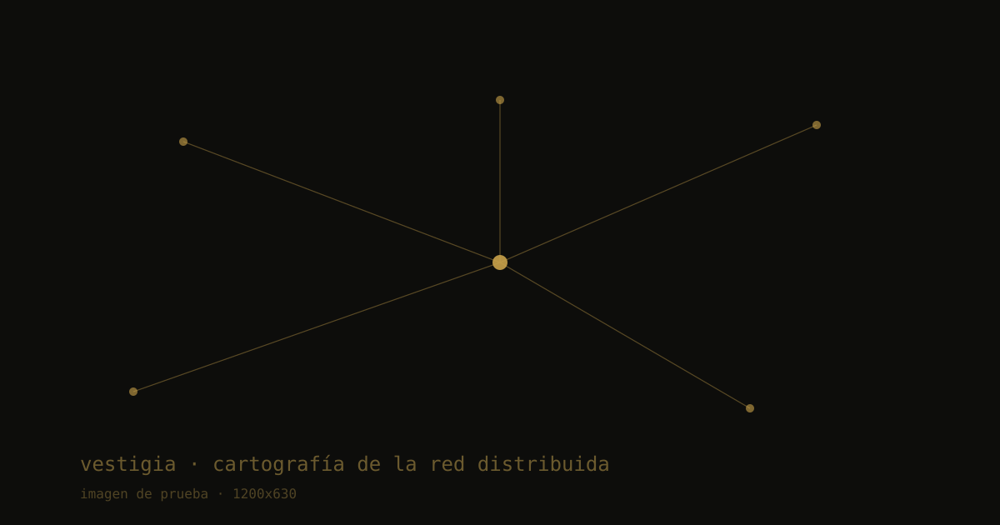
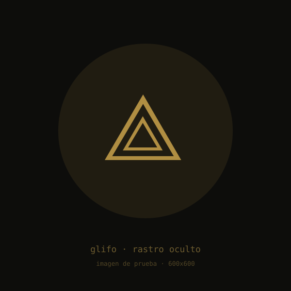
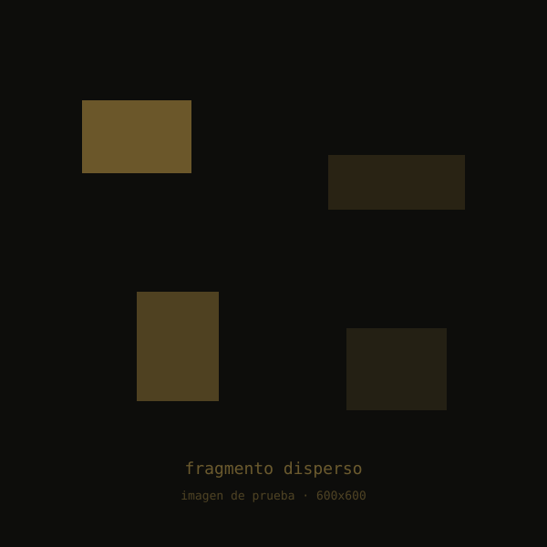
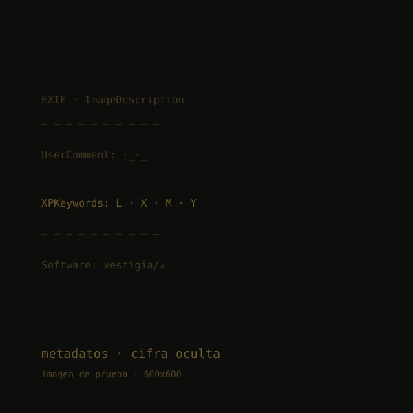

Toda huella conduce a alguna parte.
Seguiste una seña y llegaste lejos. Páginas que no se conocen entre sí, repartidas por la red, hablando de cosas distintas. Ninguna parecía ser la misma. Y sin embargo, algo se repetía.
Esto es VESTIGIA: una sola obra fragmentada en la web. Lo que tomaste por coincidencia —ecos dispersos, una misma huella— es el material de la pieza.
VESTIGIA no vive en un lugar: vive entre lugares. Cada fragmento se publica como si fuera autónomo —un texto, una imagen, un tema— y nada en su superficie delata que pertenece a algo mayor.
La obra es la red invisible que los une. No está en las páginas, sino en el trayecto que las conecta. El mapa solo existe para quien mira de cerca.
VESTIGIA se declara obra. No es una campaña, ni un juego de marca: es net.art —arte hecho con la red y para la red.
Su soporte no es la pantalla, sino el enlace. Vive en el espacio entre páginas, allí donde el navegante decide seguir o detenerse.
Cada fragmento finge autonomía. El disimulo es parte de la técnica: una obra que se esconde a plena vista exige otra forma de mirar.
No hay galería ni marco. El marco es el código fuente, los metadatos, la barra de direcciones. Lo invisible sostiene lo visible.
La pieza se completa en quien la recorre. Sin lectura no hay rastro; sin rastro no hay obra.




“Toda obra deja huellas; pocas son, ellas mismas, la huella.”
Mirar de cerca es ya un acto de la obra. El que sigue el rastro lo escribe.